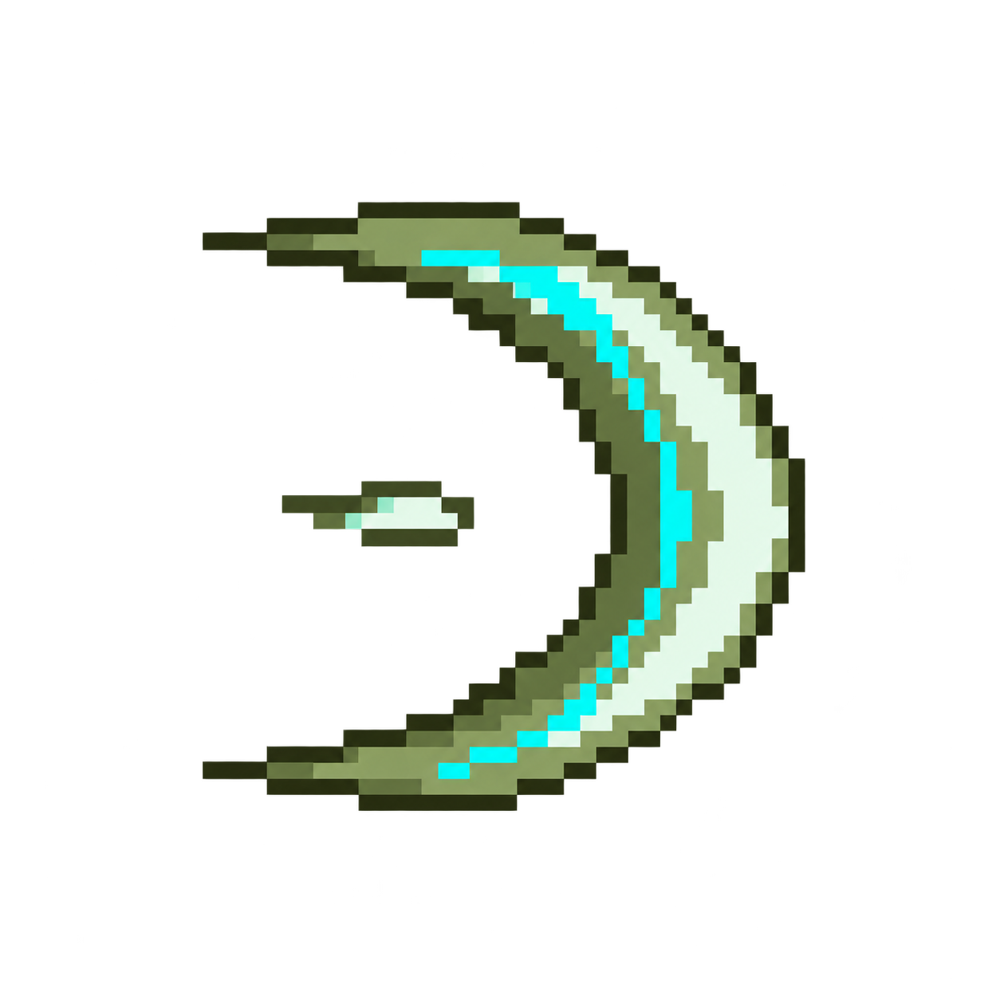

바람 칼날
칼날 앞면은 정면 유지 · 베기 면이 수직에서 수평으로 눕는 변화

생성 위치 →
이미지 불러오는 중
모두 오른쪽으로 직진하며 초승달의 볼록한 앞면도 오른쪽을 유지합니다. 첫 칼날의 베기 면이 점점 누워 기존 마력칼날의 납작한 곡선 궤적이 되도록 원근 변형한 시안입니다. 변형 비율·속도·발사 간격은 임시값이며 게임에는 적용하지 않았습니다.
칼날 앞면은 정면 유지 · 베기 면이 수직에서 수평으로 눕는 변화

모두 오른쪽으로 직진하며 초승달의 볼록한 앞면도 오른쪽을 유지합니다. 첫 칼날의 베기 면이 점점 누워 기존 마력칼날의 납작한 곡선 궤적이 되도록 원근 변형한 시안입니다. 변형 비율·속도·발사 간격은 임시값이며 게임에는 적용하지 않았습니다.